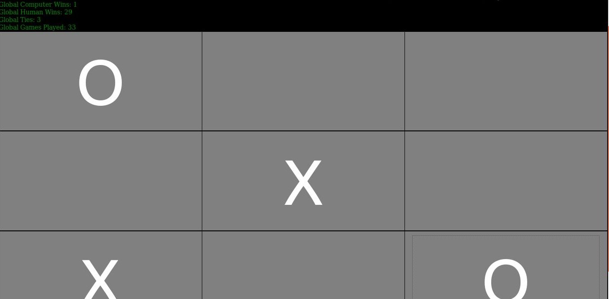
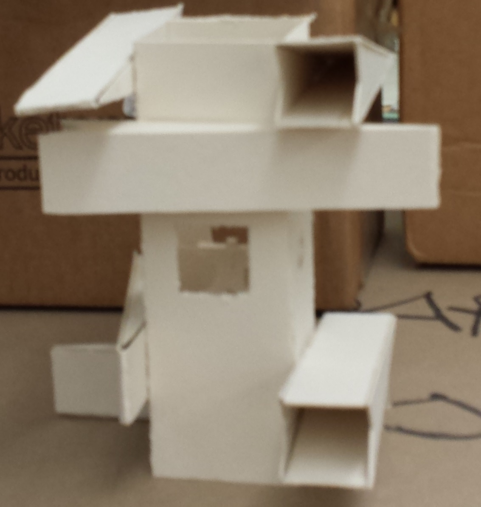

Play against a neural net and watch it learn from its mistakes. Game features persistent stat tracking as well as file upload
and download.

My name is Sean Farley,
I am a full stack developer based in Philadelphia. My current
stack leverages Google Cloud Functions to run a serverless Express
instance, hosted on Firebase with a light seasoning of jQuery.